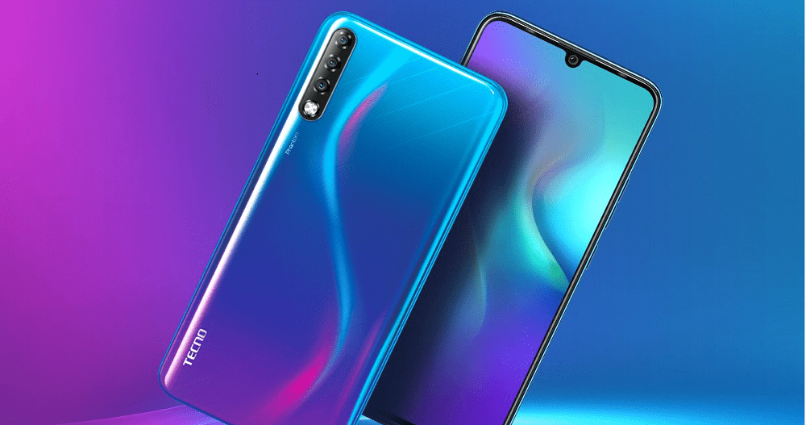
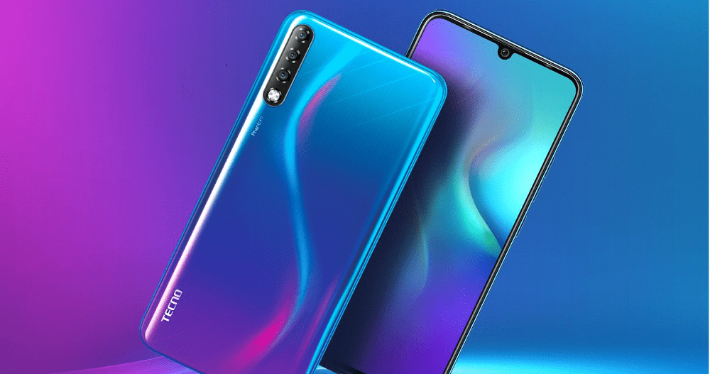

About us
Tecno is a chinese mobile phone manufacturer based in Hongkong.it was established in 2006 by George Zhu in Hongkong . He used 1 billion US dollars. It is a subsidary of transsion Holdings.
Tecno focused its business on Africa and South Asia market. In 2007, Tecno created a second brand, Itel that sold in Africa and in May 2007 it was recognised as the most standard friendly brand.
In 2016, Tecno mobile launched the best camera smart phone in Africa. In the same year, Tecno launched Tecno phontom 6 and phontom 6 plus with biometric authentications.
Tecno specialises in the production of mobile phones.
 

We deal in other phones
- Iphones
- Samsung
- Infinix phones
- Others
Copyright © Matilda Media. All Rights Reserved